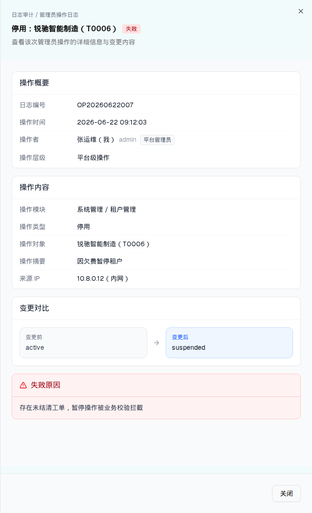

| 触发路径 | 层级0 → 列表行「查看」→ 右侧 Sheet（sm:max-w-2xl）。本例取的是失败记录，可看到「失败原因」区块 |

| 分区 | 字段 | 显隐条件 |
|---|---|---|
| 头部 | 面包屑「日志审计 / 管理员操作日志」+ 标题「{操作类型}：{操作对象}」+ 结果徽章 | 常显 |
| 操作概要 | 日志编号 / 操作时间 / 操作者（姓名 + 账号 + 层级徽标「平台管理员」「租户管理员」）/ 所属租户 / 操作层级 | 「所属租户」仅 layer==="tenant" |
| 操作内容 | 操作模块（一级 / 二级 完整路径）/ 操作类型 / 操作对象 / 操作摘要（detail）/ 来源 IP（IP（归属地）） | 常显 |
| 变更对比 | 左侧灰卡「变更前」before ?? "—" → ArrowRight → 右侧蓝卡「变更后」after ?? "—" | 仅 before 或 after 存在时（与 opType 无关） |
| 失败原因 | 红卡 + AlertTriangle + failReason 自由文本 | 仅 result==="failed" && failReason |
| 底部 | 「关闭」 | 常显 |
⚠ failReason 是自由文本（如「存在未结清工单，暂停操作被业务校验拦截」），不是枚举 —— 与认证日志的 7 类枚举 + 处置建议映射形成对比。
| 比对项 | demo 实际 DOM | 提取的 HTML | 是否一致 |
|---|---|---|---|
| 根节点 | [data-slot=sheet-content] | 同 | 一致 |
| 后代节点数 | 74 | 74 | 一致 |
| 分区 | 4（操作概要 / 操作内容 / 变更对比 / 失败原因） | 4 | 一致 |
| 失败原因区 | 仅失败记录（本例为失败记录 → 含该区） | 同 | 一致 |
| 层级徽标 | 仅详情里有（列表「操作者」列没有） | 同 | 一致 |